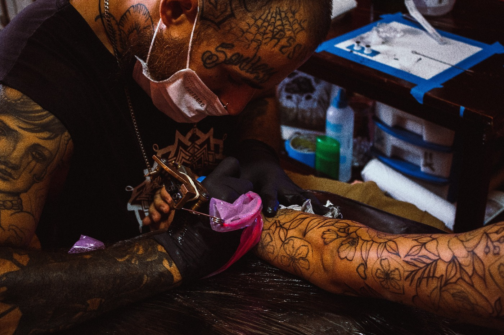
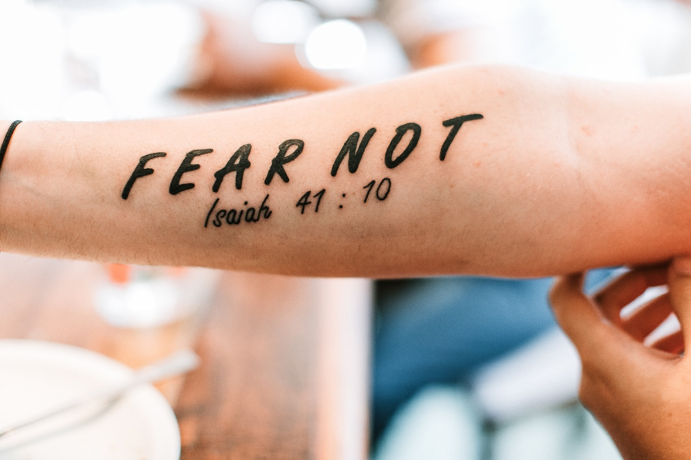

Tattoos are the mainstream of all times.
 Madiyar Aubakirov ( Redactor )
March 26, 2020
Madiyar Aubakirov ( Redactor )
March 26, 2020
Tattoos are the mainstream of all times. It was trending even 50000 years ago in Rome and Europe. However at that time usually it wasn't for beauty, people got tattoos in order to mark their tribes. Some of them believed that tattoos have an outstanding power to protect people. That was pretty cool because tattoos were found only on people's skins. Netherlanders called that process as «prikschildern» or «stechmalen».
From those times almost nothing changed. Nowadays lots of tattoos are used to mark their gangs or criminal bands like "13" etc. For instance in Russia and the countries nearby the Russia use "thieves stars" in their collarbone. Alternatively, now individual get tattoos in order to decorate their body. People have tattoos everywhere, in their shoulders, arms, even lots of rappers have it in their face. A couple decades ago it was a mark of a gang, now it's an entertainment or a guarantee of losing of a workplace. In 90th people liked big and noticeable tattoos, however now people use aesthetic miniature tattoos. Another difference is that some decades ago only men had tattoos, but now in USA 23% of female have tattoos while only 19% of male have it. By now about 20% of people have tattoos in their body. One of them 49 y.o. man called Lucky Diamond Rich has 100% tattoos in his skin.

James Cook
First person who showed tattoos to Europe is James Cook. He brought a person who has lots of different decorations in his body. After that tattoos became a trend in Europe and in Central Asia. There are some historical individuals who had tattoo. The most unexpected person is Albert Einstein. Others are Petr I, Stalin, Nicolai II and Ekaterina II.


Another interesting fact is that Asian Geishas had lots of tattoos and they used that like clothes. They did tattoos in different part of their bodies in order to use them like clothes and that didn't had any problems by opposite gender.